Cenotes y albercas naturales
Sellado de paredes de roca viva, control de filtraciones hacia construcciones adyacentes y estabilización de bordes. Materiales compatibles con vida acuática y certificados para contacto con agua.
Evaluar mi cenoteSistemas de impermeabilización para cenotes y estructuras subterráneas. Diagnosticamos, diseñamos y aplicamos la solución correcta para el suelo kárstico de la Península de Yucatán.
En la Península de Yucatán el suelo es roca caliza porosa y el nivel freático está a pocos metros de la superficie. Las soluciones genéricas fallan porque no fueron diseñadas para presión hidrostática constante, salinidad ni cavidades kársticas.
El agua empuja desde abajo y desde los lados, 24 horas al día. Una membrana convencional se despega en meses.
Cloruros y sulfatos atacan el concreto y el acero. El sistema tiene que resistir químicamente, no solo sellar.
Cisternas, sótanos y cenotes integrados a hoteles o viviendas. Hay que intervenir sin demoler y sin detener la operación.
Cada estructura subterránea tiene su propio comportamiento frente al agua. Diseñamos el sistema para la estructura, no al revés.
Sellado de paredes de roca viva, control de filtraciones hacia construcciones adyacentes y estabilización de bordes. Materiales compatibles con vida acuática y certificados para contacto con agua.
Evaluar mi cenote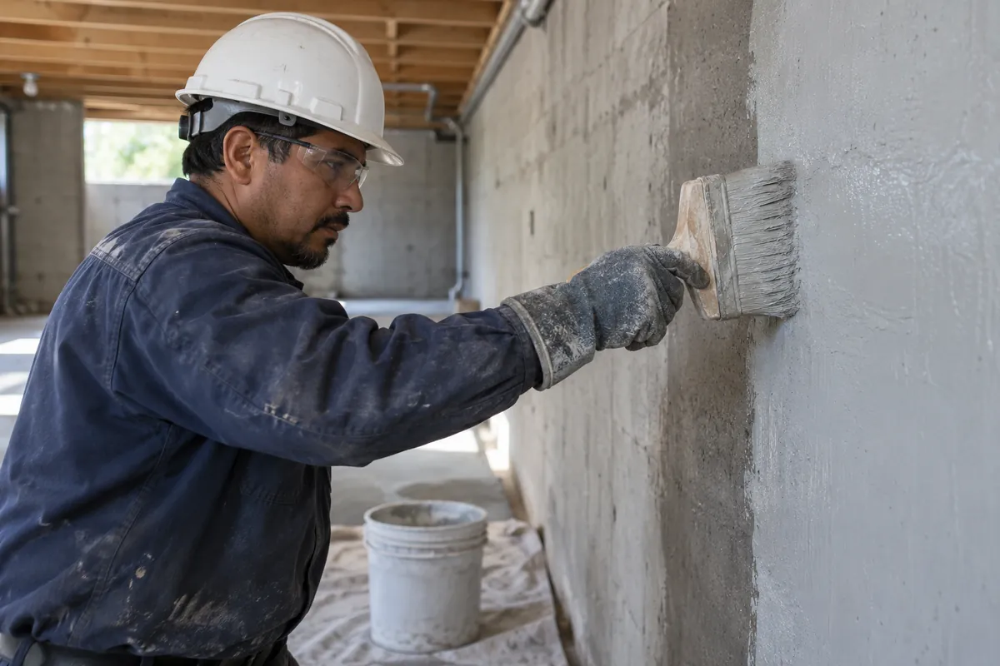
Estacionamientos subterráneos, cuartos de máquinas y losas de cimentación bajo nivel freático.
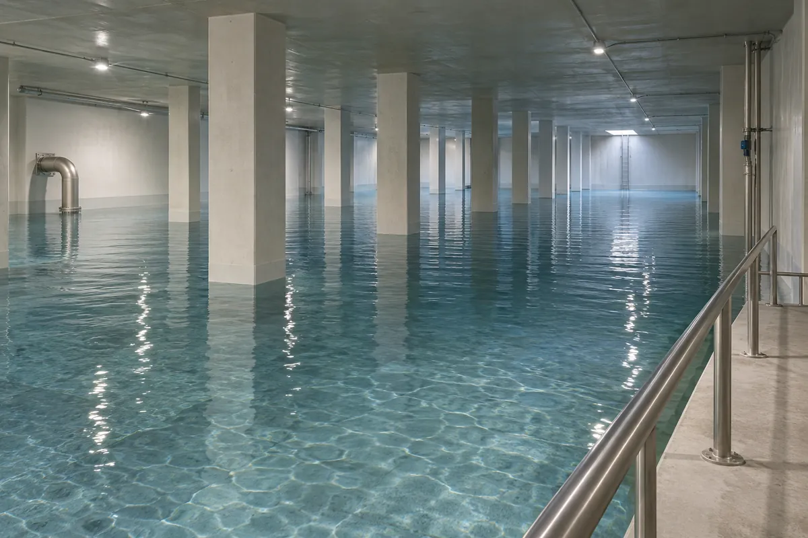
Recubrimientos de grado potable, reparación de fisuras activas y sellado de pasos de tubería.
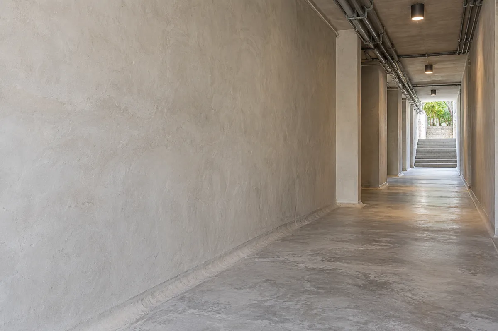
Pasos de servicio, galerías de inspección y conexiones entre edificios con juntas en movimiento.
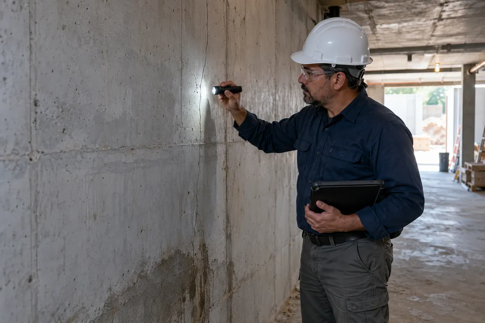
Pruebas de estanqueidad, cámara termográfica y localización de la entrada real del agua antes de proponer cualquier sistema.
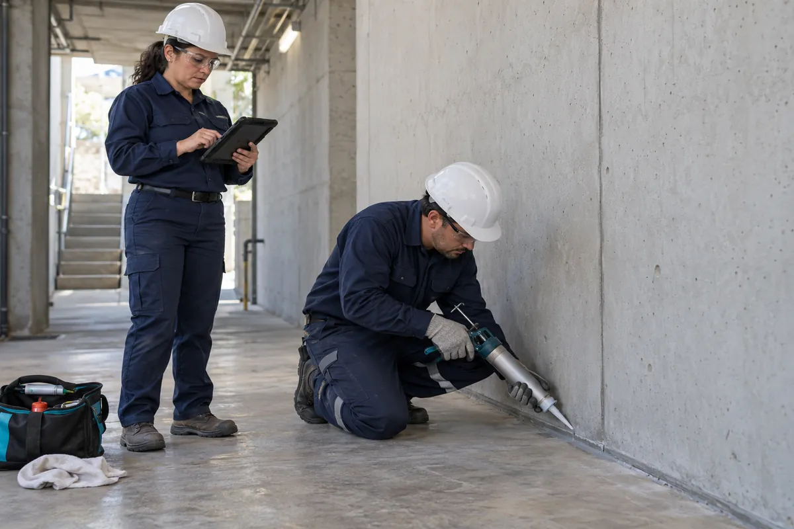
Inspecciones anuales, reposición de sellos y reporte técnico para conservar la garantía.
No existe un producto universal. Combinamos cuatro familias de sistemas según la presión del agua, el estado del sustrato y la vida útil esperada.
Un tratamiento cementoso que penetra en el concreto y forma cristales insolubles dentro de los poros. La estructura se vuelve impermeable desde adentro y se autosella ante microfisuras futuras.
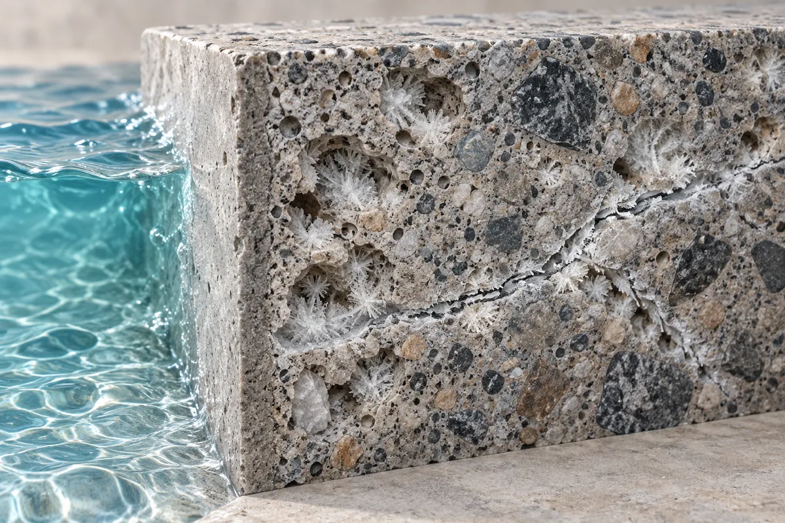
Membrana elastomérica aplicada en caliente que cura en segundos y forma una piel continua sin juntas. Soporta movimiento estructural y abrasión; es nuestra elección para paredes de cenote y albercas naturales.
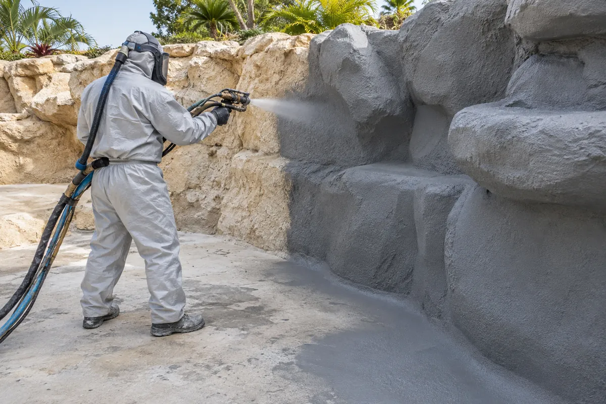
Resinas de poliuretano o acrílicas inyectadas a presión en fisuras y juntas activas. Reaccionan con el agua y la expulsan: detienen filtraciones en curso sin excavar ni vaciar la estructura.
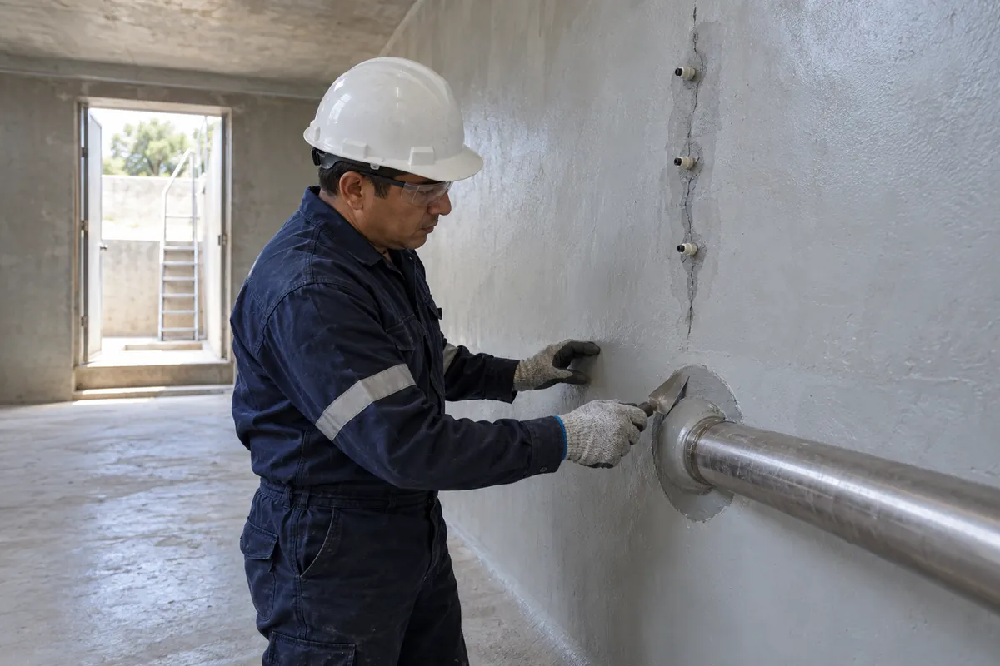
Barreras pasivas para obra nueva: la bentonita sódica se hincha en contacto con el agua y sella por sí misma; la geomembrana de HDPE forma la línea de defensa exterior bajo losa y muros de contención.
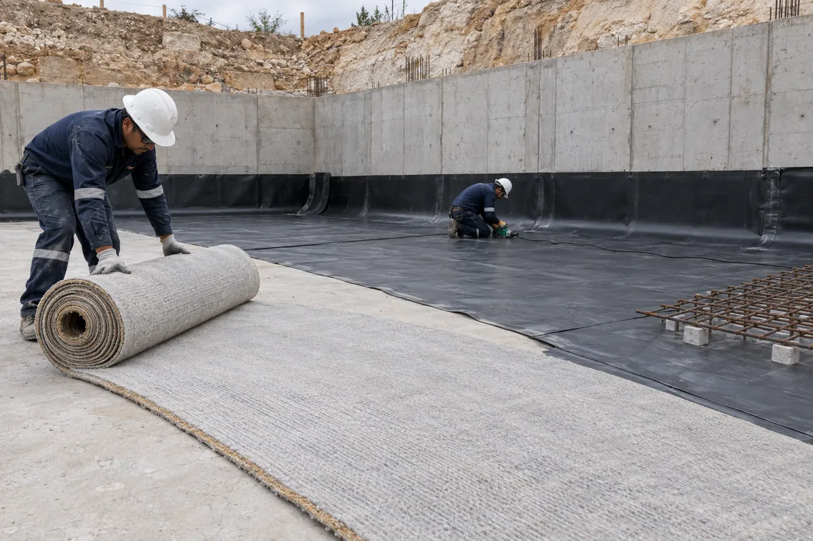
Seis etapas, un responsable técnico y un expediente por escrito de principio a fin. Sin sorpresas en obra y con evidencia de cada decisión.
Visita al sitio, entrevista con el responsable y lectura de planos. Determinamos si el problema es de diseño, de material o de ejecución.
Pruebas de estanqueidad, termografía y, cuando aplica, extracción de núcleos. Entregamos un informe con fotografías, mediciones y la causa real de la filtración.
Especificación de materiales, espesores, detalles de juntas y pasos de tubería. Incluye presupuesto cerrado y cronograma.
Hidrolavado, perfilado mecánico y reparación de fisuras. El 70 % de las fallas de impermeabilización nacen aquí; por eso no lo subcontratamos.
Equipo propio, medición de espesores en húmedo y registro de temperatura y humedad en cada jornada.
Prueba de inundación o de presión antes de entregar. Garantía por escrito de hasta 10 años con plan de inspección anual.
Muro de contención de un estacionamiento subterráneo en la zona hotelera, dos metros bajo el nivel freático. Arrastra la línea para comparar.
Una selección de intervenciones en la Península de Yucatán.
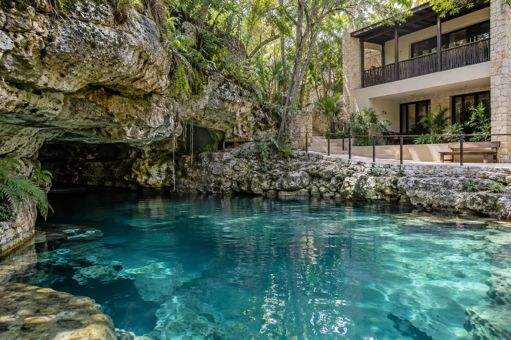
Tulum, Q. Roo · Poliurea sobre roca viva, 620 m²
Filtración hacia cimentación eliminada; sin obra sobre el cuerpo de agua.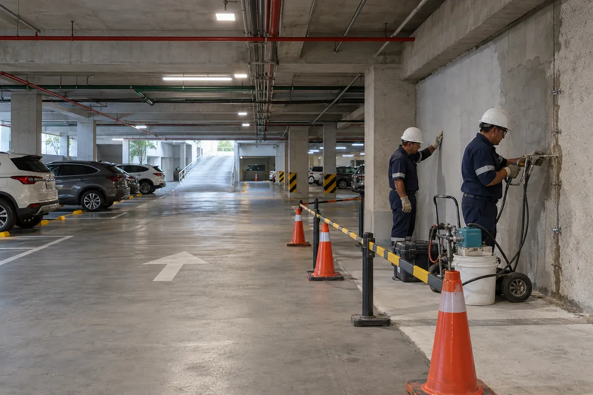
Cancún, Q. Roo · Cristalización + inyección, 4,800 m²
Intervención con el estacionamiento en operación; 10 años de garantía.Playa del Carmen, Q. Roo · Recubrimiento grado potable, 1,150 m²
Certificación de contacto con agua potable y prueba de inundación de 72 h.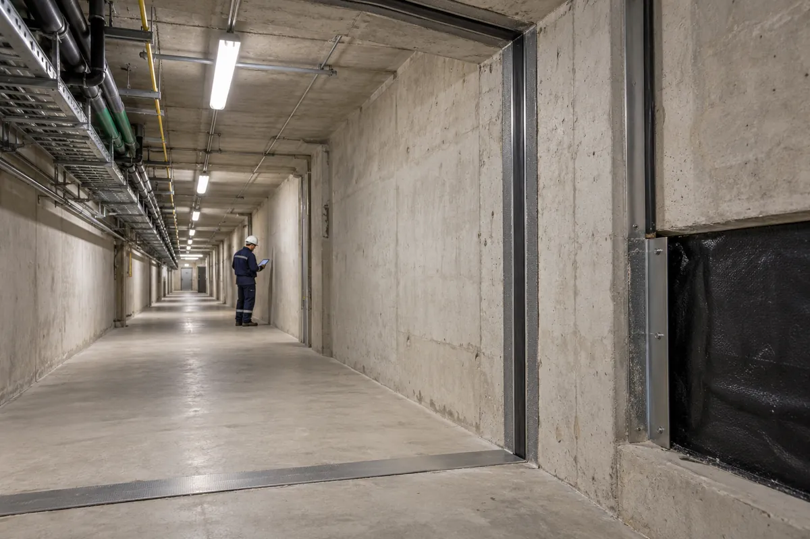
Mérida, Yuc. · Geomembrana + juntas elásticas, 310 m lineales
Juntas de dilatación resueltas con movimiento de hasta 25 mm.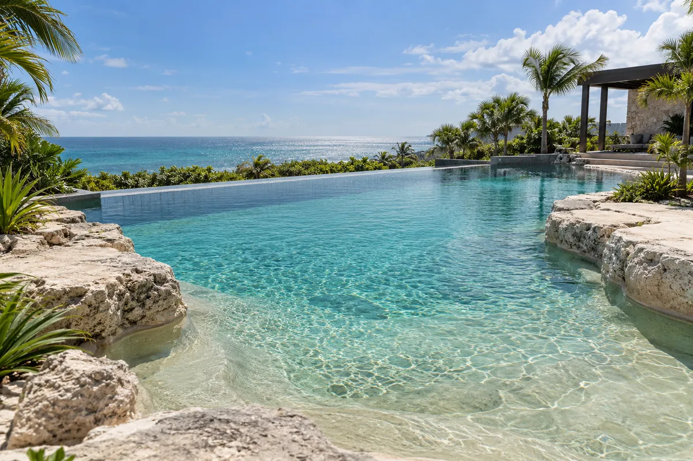
Puerto Morelos, Q. Roo · Poliurea alifática, 410 m²
Sin pérdida de agua medible en 30 días de monitoreo.Cada entrega incluye un expediente técnico: diagnóstico, fichas de los materiales, registro diario de aplicación, resultado de la prueba final y el plan de inspección. Si algo falla dentro del periodo de garantía, lo corregimos sin costo.
Solicita una evaluación técnica“Llevábamos cuatro años con el sótano húmedo y tres contratistas distintos. MayaShield fue el primero que nos explicó de dónde entraba el agua antes de cotizar.”
“Trabajaron sobre el cenote sin vaciarlo ni afectar a los huéspedes. El informe final es el documento más completo que hemos recibido de un proveedor.”
“La cisterna pasó la prueba de inundación a la primera. Dos años después, cero filtraciones.”
“Precio cerrado, fecha cumplida y garantía por escrito. Es lo que uno espera y casi nunca recibe.”
Sí. Para cenotes usamos poliurea alifática y recubrimientos certificados para contacto con agua, sin solventes ni lixiviación. Trabajamos por secciones, con barreras flotantes, y nunca vaciamos el cuerpo de agua. Antes de iniciar, coordinamos con la autoridad ambiental cuando el sitio lo requiere.
La visita dura entre dos y cuatro horas. En cinco días hábiles entregamos un informe con la causa probable de la filtración, el sistema recomendado y un presupuesto cerrado. La evaluación no tiene costo dentro de Cancún, Playa del Carmen y Tulum.
En la mayoría de los casos no. La inyección de resinas y la cristalización se aplican desde el interior y por zonas. Planificamos el trabajo por turnos para que un estacionamiento, un hotel o una cisterna sigan funcionando.
Cubre la estanqueidad del sistema aplicado durante el periodo acordado, con reparación sin costo. La invalidan perforaciones posteriores sin aviso, modificaciones estructurales no reportadas o la omisión de las inspecciones anuales del plan de mantenimiento.
Sí. Cubrimos toda la Península de Yucatán: Quintana Roo, Yucatán y Campeche. Para proyectos fuera de la región evaluamos caso por caso.
Cuéntanos qué estructura tienes y qué está pasando con el agua. Respondemos en menos de 24 horas hábiles con los siguientes pasos.